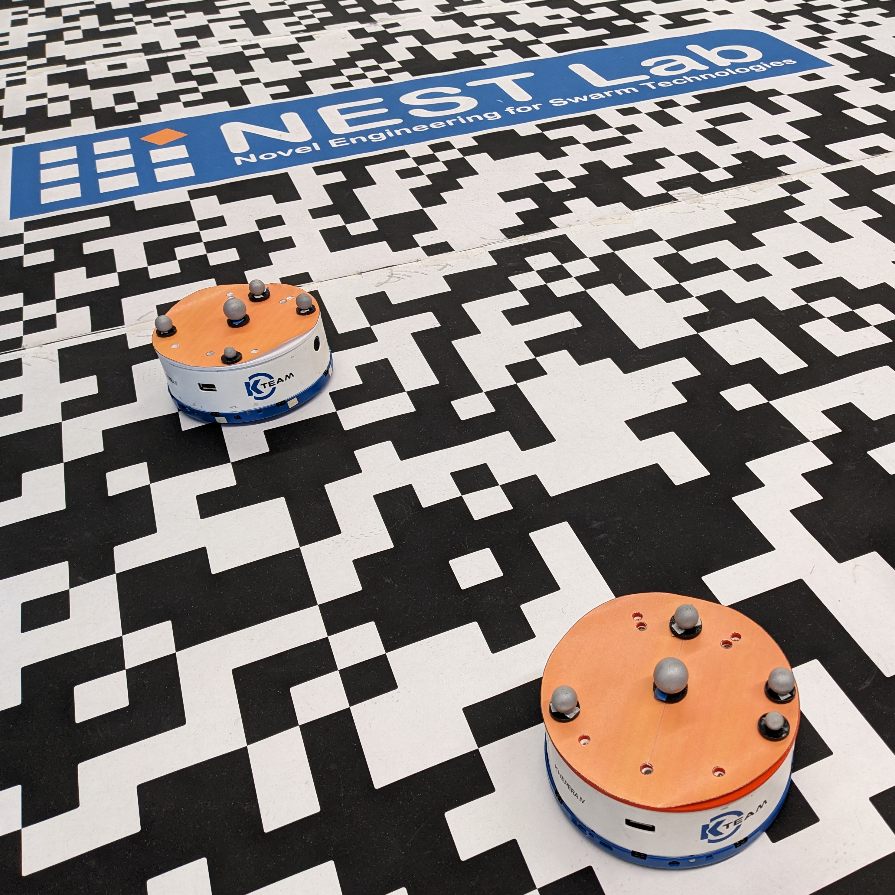
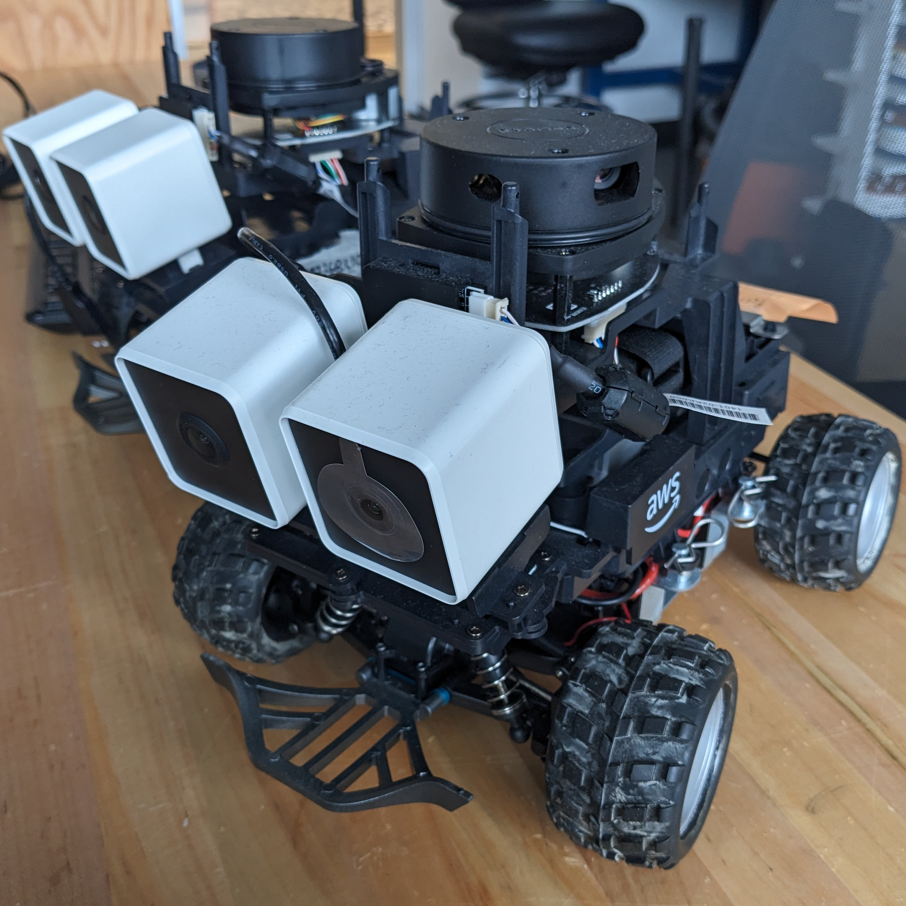
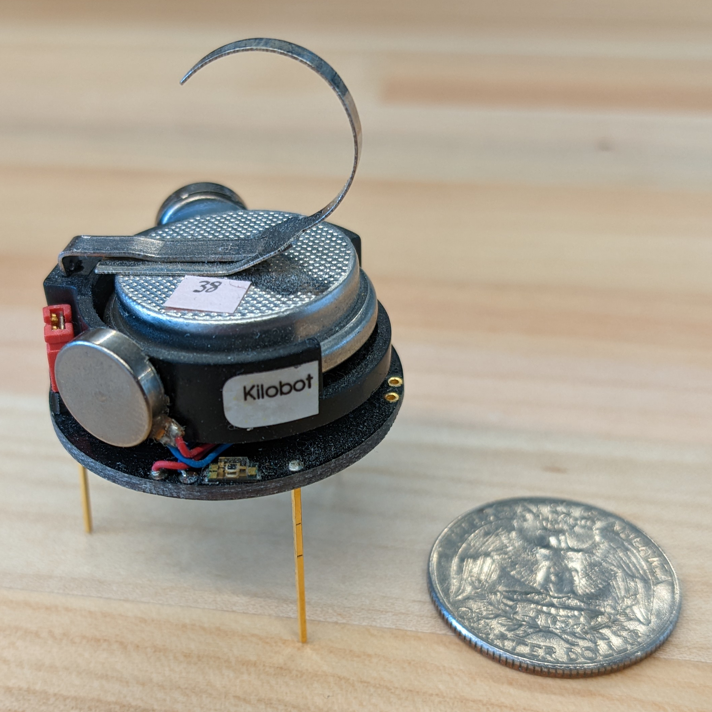
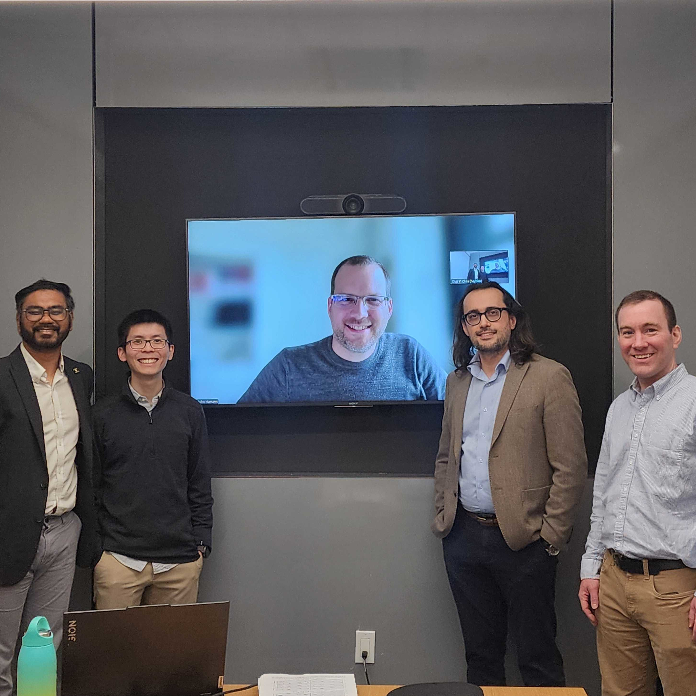

NEST Lab
Graduate Research Assistant
During my PhD at WPI, I worked as a graduate research assistant in the NEST Lab under my advisor, Dr. Carlo Pinciroli. For my dissertation research, I designed algorithms to enable swarm robots to monitor the environment effectively despite having severe sensor faults. I spent four years at the lab, culminating in a dissertation titled "Sensing Through Faults: Collective Perception by Imperfect Robot Swarms."
Background
Swarm robots are autonomous machines that work collectively in groups, mimicking biological swarms like ant colonies or fish schools. These systems are distinct from multi-robot systems by specific characteristics, such as decentralized behavior (independent decision-making), local interactions and communication, and often minimalistic onboard computational resources. Through collaboration, biological swarm agents can execute complex tasks, acting as a source of inspiration for artificial swarms' robustness and scalability. For my dissertation research, I focused on the collective perception problem, which involves monitoring the environment with swarm robots. An example of such a problem would be to deploy a swarm of robots equipped with image classification models to assess the bleaching coverage of coral reef zones. Specifically, I designed algorithms to help imperfect robot swarms—groups of robots with faulty sensors—overcome their limitations in solving this problem.
My Work and Experience
   In my research, I studied the collective perception problem using an abstract black-and-white tile setup, which either indicates an environmental feature's presence (black) or absence (white). The goal was to help robots estimate the rate at which this feature occurs—the state estimation problem—while ensuring that all the robots agree with each other—the consensus constraint. My first paper proposed a maximum likelihood estimation-based algorithm within a decentralized Kalman filter structure to detect the rate at which the black tiles occur in the environment, called the Minimalistic Collective Perception Algorithm. This algorithm enables swarm robots with severely degraded sensors to solve the state estimation problem, assuming that the level of degradation is known.
When sensor accuracy is unknown, I devised the Adaptive Sensor Calibration Filter (ASCF) to help robots calibrate for miscalibrated robots and the Bayes Collective Perception Filter (BayesCPF) to help robots track their sensor degradation over time. These algorithms involve various statistical techniques, including an extended Kalman filter and a hypothesis test. These methods, introduced in my second and third papers, show that accurate estimation is possible even when robots are miscalibrated or have a degrading sensor.
Throughout my four years at the lab, my research efforts have required building physical platforms, programming robot controllers, and developing workflows for experiments (simulated and physical). To run the experiments, the robots needed identification attachments (required by the Vicon motion capture system) that I designed and 3-D printed. I wrote and cross-compiled the controllers for the Khepera IV robots used in experiments, which involved the control of motion, sensing, and inter-robot communication. The controller also contained a client interacting with the Vicon server, which I developed.
Outside of lab work, I participated in a few competitions to showcase my research, with some fruitful outcomes. I won 2nd place in the 2023 WPI Graduate Research Innovation Exchange (GRIE) for my research poster and received an Honorable Mention in the 2025 WPI Three Minute Thesis Competition (3MT). Aside from research-focused responsibilities, I contributed substantially to the plugin development of the Khepera IV and AWS DeepRacer robots for use in the ARGoS3 simulator. My efforts also included the integration of the ARGoS3 simulator with EMANE, a mobile ad-hoc network emulator, to improve simulation fidelity.